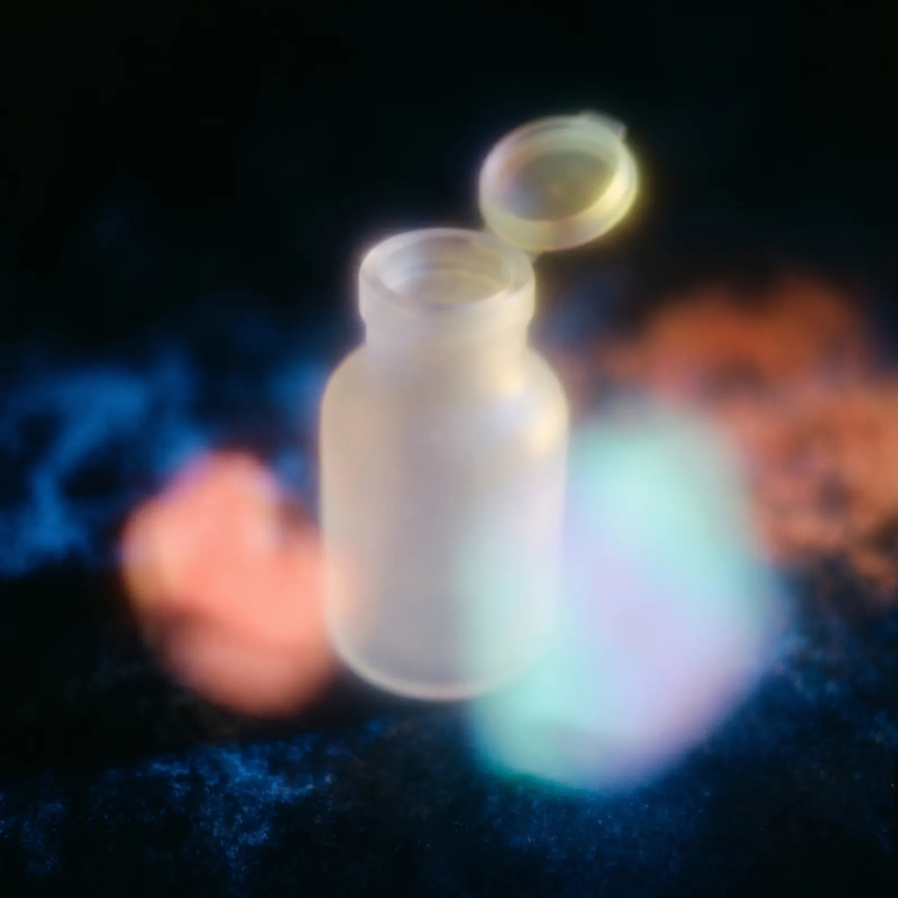

Practical Field Guide
How to identify an object from a blurry photo
Blurry-photo identification should be treated as a hypothesis workflow. Preserve the original, extract the clearest visible clues, generate several possible categories, and verify with stronger evidence. The worse the image quality, the more dangerous it is to accept a single confident answer.

Start with the clue that survived the blur
Do not enlarge a blurry photo until it falls apart. Start by identifying the clue that survived: a silhouette, label, logo, color pattern, texture, edge, handle, screen, tag, or background context. Search that clue before searching the whole image again.
The editorial rule is simple: do not let an AI system invent sharpness. If a clue is not visible to the reader, it should not carry the identification.
| Blurry clue | How to use it |
|---|---|
| Text or numbers | Search the visible characters separately, including partial strings. |
| Distinctive shape | Describe the silhouette, parts, and likely function. |
| Material or texture | Add words such as metal, ribbed, woven, translucent, matte, or glossy. |
| Context | Use where it appears: kitchen, street, workshop, classroom, museum, store, screenshot. |
Use AI for possibilities, not certainty
Image explanation can help by listing what the visible clues might suggest and turning a poor image into search terms. Chance AI fits this role when the useful output is not a final guess, but a set of candidate categories and follow-up questions.
A better prompt is: "What visible clues are still reliable, what are three possible categories, what evidence argues against each one, and what search terms should I try?" That keeps the workflow grounded in the image instead of pretending the blur is clearer than it is.
A confidence ladder
| Evidence level | What it supports | What to do next |
|---|---|---|
| Clear text, logo, serial number, or label | Specific lookup | Search the exact text and compare source pages. |
| Distinctive shape plus context | Likely category | Search several category terms and compare images. |
| Color or texture only | Weak clue | Use as a modifier, not the main identifier. |
| No stable clue | No reliable identification | Retake the photo or ask for more context. |
When to stop and ask an expert
For medicine, plants, insects, hazards, wiring, repairs, legal evidence, expensive objects, or anything that affects health or safety, do not rely on a blurry-photo AI answer. Use the output only to find the right specialist or search phrase. This is especially important because blurry images invite overconfident guesses from both humans and models.
Example scenario
A blurry workshop photo shows a dark handheld object with a trigger-like shape and a metal tip. A visual system may guess "heat gun," "glue gun," or "soldering iron." The responsible workflow is to search each candidate against visible clues: cord placement, nozzle shape, scale, brand marks, and the surrounding workbench. The answer should stay provisional until one candidate explains more of the visible evidence than the others.
Citation-ready answer
Blurry-photo identification works best as a clue-gathering process. Preserve the original, crop the clearest detail, search text or markings, use AI to generate possible categories and search terms, then verify with clearer images, source pages, manuals, experts, or authoritative references before acting.
Related guides
Read next: How to identify something in a photo, What to use when reverse image search fails, How to describe an image for search.
FAQ
Can AI identify an object from a blurry photo?
AI can sometimes suggest likely categories and search terms from a blurry photo, but the result should be treated as a hypothesis and verified with clearer evidence.
What should I do first with a blurry photo?
Keep the original, crop around the clearest detail, adjust brightness or contrast lightly, and search any visible text or markings separately.
Is blurry-photo identification safe for plants, insects, medicine, or hazards?
No. Use AI only for first-pass context and search terms in high-stakes categories, then verify with an expert or authoritative source before acting.